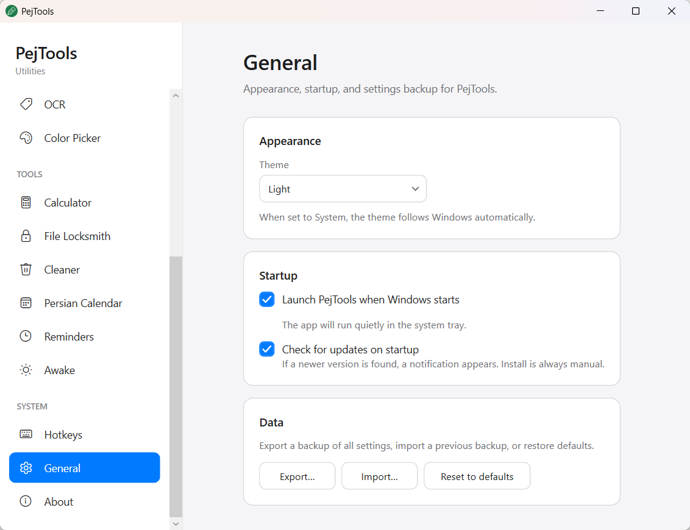
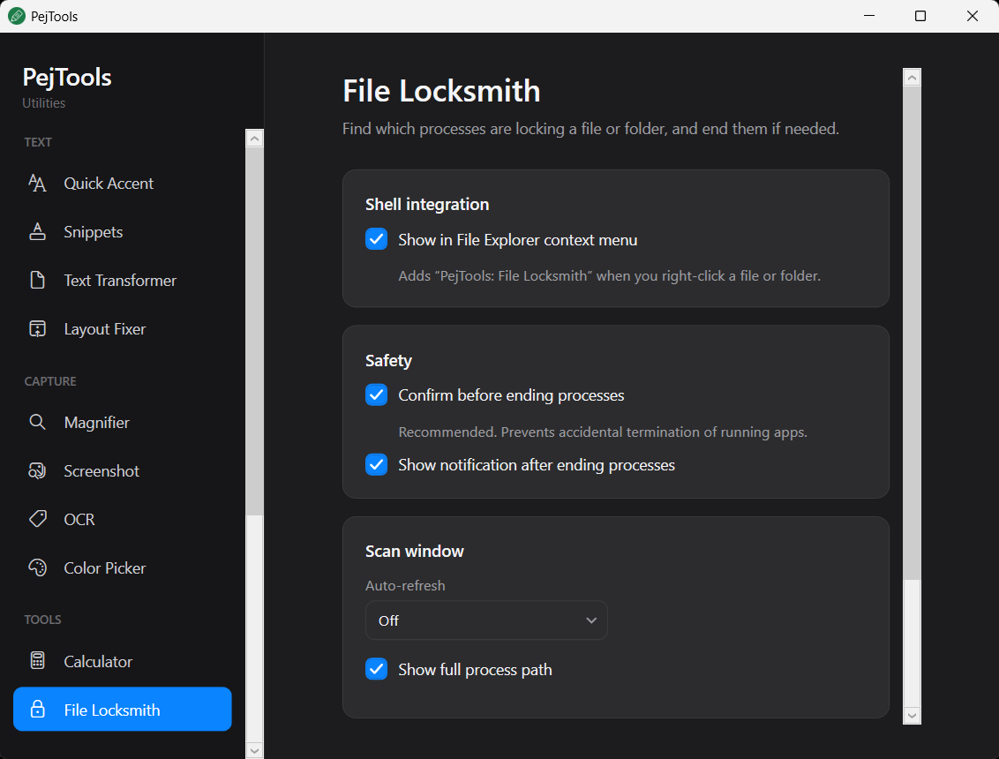

Quick Accent
Type accented characters and special symbols with a simple keyboard gesture.
Lightweight Windows utilities
A focused collection of small, practical tools that live in the system tray. Simple, fast, and free.
Download PejToolsVersion 1.0.3 · Updated September 15, 2026 · Windows 10/11 · x64


Type accented characters and special symbols with a simple keyboard gesture.
Expand short triggers into frequently used text, including date and time placeholders.
Change case, create slugs, reverse, sort lines, normalize Persian text, and clean spaces.
Convert text typed with the wrong keyboard layout between English and Persian (EN ↔ FA).
Pick any color from the screen and instantly get Hex, RGB, and HSL values.
Select a region and extract text using Windows built-in optical character recognition.
Capture the screen or a region quickly, with optional clipboard and save options.
A lightweight screen magnifier for quick and precise zooming.
A fast, always-ready calculator for everyday calculations.
Discover which processes are locking a file or folder and end them when needed.
Clear Recycle Bin, temporary files, and optional caches to free disk space.
Set simple reminders that stay out of the way until you need them.
Keep track of Persian dates alongside the Windows desktop.
Keep the computer awake without changing your system power settings.
Launch any PejTools feature instantly with global keyboard shortcuts.